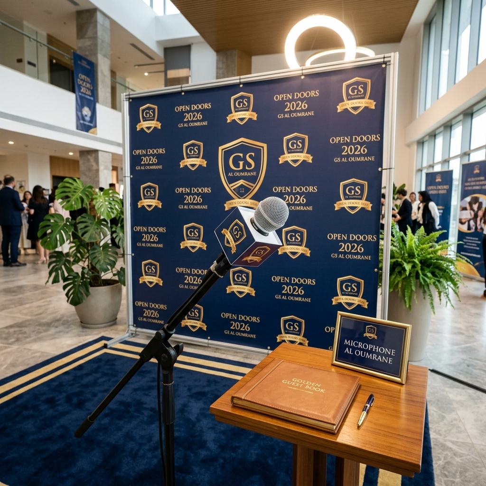

المعاينة التخيلية (Mockup)
هكذا سيبدو ركن "ميكروفون العمران" بعد التجهيز. لاحظ كيف تضفي الخلفية الموحدة والإضاءة طابعاً احترافياً على المكان.

تصميم هوية الميكروفون (Mic Flag)
قم بطباعة هذا المخطط، قص الأطراف، ثم قم بطيه وتلصيقه ليصبح مكعباً يحيط بالميكروفون.
ميكروفون العمران
⚠️ اطبع 4 نسخ من هذا المربع وألصقها على جوانب مكعب كرتوني.
لوحة الركن الإرشادية
لوحة كبيرة توضع بجانب الركن لتشجيع الزوار على المشاركة.
ميكروفون العمـران
شاركـونا انطباعاتـكم بالصـوت والصـورة
🎤